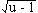
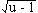

Solution to puzzle 10: Farmer's enclosure
A farmer has four straight pieces of fencing: 1, 2, 3, and 4 yards in length. What is the maximum area he can enclose by connecting the pieces? Assume the land is flat.
Using Heron's formula
Consider a (clearly) non-concave quadrilateral with respective sides 1,2,3,4. Connect the 1,2 and 3,4 vertices, giving two triangles, with sides 2,3,x and 1,4,x. Use Heron's Formula to represent the area of each triangle in terms of x.
(For a triangle with sides a,b,c, with s = semi-perimeter = (a+b+c)/2, Heron's formula gives area2 = s(s-a)(s-b)(s-c).)
For  2,3,x, area2 = (25-x2)(x2-1)/16.
2,3,x, area2 = (25-x2)(x2-1)/16.
For  1,4,x, area2 = (25-x2)(x2-9)/16.
1,4,x, area2 = (25-x2)(x2-9)/16.
Let u = x2 and A = area of quadrilateral. (u increases monotonically with positive x, so a maximum for u will be a maximum for x.)
Then 4A = + .
Differentiating, 4 · dA/du = (-2u+26) / + (-2u+34) /.
dA/du = 0  (u-13) / = (17-u) /.
(u-13) / = (17-u) /.
Squaring, we have (u-9)(u-13)2 = (u-1)(17-u)2.
Therefore u3 - 35u2 + 403u - 1521 = u3 - 35u2 + 323u - 289, leaving a linear equation, from which u = 15.4.
Hence 4A = · ( + ) = · 2.5 · . (Since 14.4 = 1.52 · 6.4.)
Hence 4A = 2.5 · 6.4 · = 16 .
Therefore A = 4 = 2 square yards.
Geometrical considerations show this to be a maximum.
Finally, given a quadrilateral with sides 1,2,3,4, we have three non-congruent forms:
1,2,3,4 = 1,4,3,2; 1,2,4,3 = 1,3,4,2; 1,3,2,4 = 1,4,2,3.
However, if we are interested only in area, the three forms are equivalent. This is because each form can be generated from another by joining opposite vertices and turning over one of the triangles.
The quadrilateral above shows one of the possible orientations that encloses maximum area.
Using Brahmagupta's formula
Having found this relatively laborious solution, I stumbled across a truly remarkable formula for the area of an arbitrary quadrilateral. This is known as Brahmagupta's formula.
For a quadrilateral with sides a, b, c, d, and for which q is half the sum of two opposite angles (it doesn't matter which pair), the area is given by:
A =  [(s-a)(s-b)(s-c)(s-d) - abcd cos2q].
[(s-a)(s-b)(s-c)(s-d) - abcd cos2q].
For a cyclic quadrilateral, i.e., a quadrilateral that can be inscribed in a circle, and for which the sum of opposite angles is 180°, cos q = 0, thereby maximizing the area.
From this formula, the answer of 2 drops straight out. Of course, a lot of work is embodied in that formula!
Remarks
A shortcut is possible for certain side lengths. Consider pieces of fencing of length 1, 4, 7, 8. As above, we may assume that sides 1 and 8 are neighbors. (If not, we can join opposite vertices and turn over one of the triangles.) Now we have triangles with sides 1,8,x and 4,7,x. The maximum area for each triangle (and therefore for the quadrilateral) occurs when each is right-angled. Since 12 + 82 = 42 + 72, we can build a quadrilateral of area 18 from two right triangles of common hypotenuse .
Source: Original